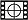

Lwr
Purpose
LWR locally weighted regression for univariate Y.
Synopsis
- model = lwr(x,y,ncomp,npts,options); %identifies model (calibration step)
- pred = lwr(x,model,options); %makes predictions with a new X-block
- valid = lwr(x,y,model,options); %makes predictions with new X- & Y-block
- lwr % Launches an Analysis window with LWR as the selected method.
Please note that the recommended way to build and apply a LWR model from the command line is to use the Model Object. Please see this wiki page on building and applying models using the Model Object.
Description
LWR calculates a single locally weighted regression model using the given number of principal components ncomp to predict a dependent variable y from a set of independent variables x.
LWR models are useful for performing predictions when the dependent variable, y, has a non-linear relationship with the measured independent variables, x. Because such responses can often be approximated by a linear function on a small (local) scale, LWR models work by choosing a subset of the calibration data (the "local" calibration samples) to create a "local" model for a given new sample. The local calibration samples are identified as the samples closest to a new sample in the score space of a PCA model (the "selector model".), using the Mahalanobis distance measure. Models are defined using the number principal components used for the selector model (ncomp), and the number of points (samples) selected as local (npts).
Once the samples are selected, one of three algorithms are used to calculate the local model:
- globalpcr = the scores from the PCA selector model (for the selected samples) are used to calculate a PCR model. This model is more stable when there are fewer samples being selected, but may not perform as well with high degrees of non-linearity.
- pcr / pls = the raw data of the selected samples are used to create a weighted PCR or PLS model. These models are more adaptable to highly varying non-linearity but may also be less stable when fewer samples are being selected.
The LWR function can be used in 'predicton mode' to apply a previously built LWR model, model, to a new set of data in x, in order to generate y-values for these data.
Furthermore, if matching x-block and y-block measurements are available for an external test set, then LWR can be used in 'validation mode' to predict the y-values of the test data from the model model and x, and allow comparison of these predicted y-values to the known y-values y.
For more information on the basic LWR algorithm, see T. Naes, T. Isaksson, B. Kowalski, Anal Chem 62 (1990) 664-673. For details on the use of y distance when selecting nearest points (option alpha), see Z. Wang, T. Isaksson, B. R. Kowalski, (1994). Anal Chem 66 (1994) 249–260.
Note: Calling lwr with no inputs starts the graphical user interface (GUI) for this analysis method. There is a  video using the LWR interface on the Eigenvector Research web page.
Inputs
- x = X-block (predictor block) class "double" or "dataset"
- y = Y-block (predicted block) class "double" or "dataset"
- ncomp = the number of latent variables to be calculated (positive integer scalar)
- npts = the number of points to use in local regression (positive integer scalar)
- model = previously generated lwr model
Outputs
- model = a standard model structure model (see Standard Model Structure)
- pred a structure, similar to model, that contains scores, predictions, etc. for the new data.
- valid a structure, similar to model, that contains scores, predictions, and additional y-block statistics, etc. for the new data.
Options
options = a structure array with the following fields:
- display: [ 'off' | {'on'} ], governs level of display to command window,
- plots [ 'none' | {'final'} ], governs level of plotting,
- waitbar: [ 'off' |{'auto'}| 'on' ] governs use of waitbar during analysis. 'auto' shows waitbar if delay will likely be longer than a reasonable waiting period.
- preprocessing: {[] []}, two element cell array containing preprocessing structures (see PREPROCESS) defining preprocessing to use on the x- and y-blocks (first and second elements respectively)
- algorithm: [ 'globalpcr' | {'pcr'} | 'pls' ] LWR algorithm to use. Method of regression after samples are selected. 'globalpcr' performs PCR based on the PCs calculated from the entire calibration data set but a regression vector calculated from only the selected samples. 'pcr' and 'pls' calculate a local PCR or PLS model based only on the selected samples.
- blockdetails: [ {'standard'} | 'all' ], extent of predictions and residuals included in model, 'standard' = only y-block, 'all' x- and y-blocks.
- confidencelimit: [ {'0.95'} ], confidence level for Q and T2 limits, a value of zero (0) disables calculation of confidence limits,
- reglvs: [] Used only when algorithm is 'pcr' or 'pls', this is the number of latent variables/principal components to use in the local regression model, if different from the number selected in the SSQ Table. The number of components selected in the SSQ table is used to generate the global PCA model which is used to select the local calibration samples. [] (Empty) implies LWRPRED should use the same number of latent variables in the local regression as were used in the global PCA model. NOTE: This option is NOT used when algorithm is 'globalpcr'.
- iter: [{5}] Iterations in determining local points. Used only when alpha > 0 (i.e. when using y-distance scaling).
- alpha: [ {0} ], has value in range [0-1]. Weighting of y-distances in selection of local points. 0 = do not consider y-distances {default}, 1 = consider ONLY y-distances. With any positive alpha, the algorithm will tend to select samples which are close in both the PC space but which also have similar y-values. This is accomplished by repeating the prediction multiple times. In the first iteration, the selection of samples is done only on the PC space. Subsequent iterations take into account the comparison between predicted y-value of the new sample and the measured y-values of the calibration samples.
The default options can be retreived using: options = lwr('options');.
See Also
analysis, ann, lwrpred, modelstruct, pls, pcr, preprocess, svm, EVRIModel_Objects